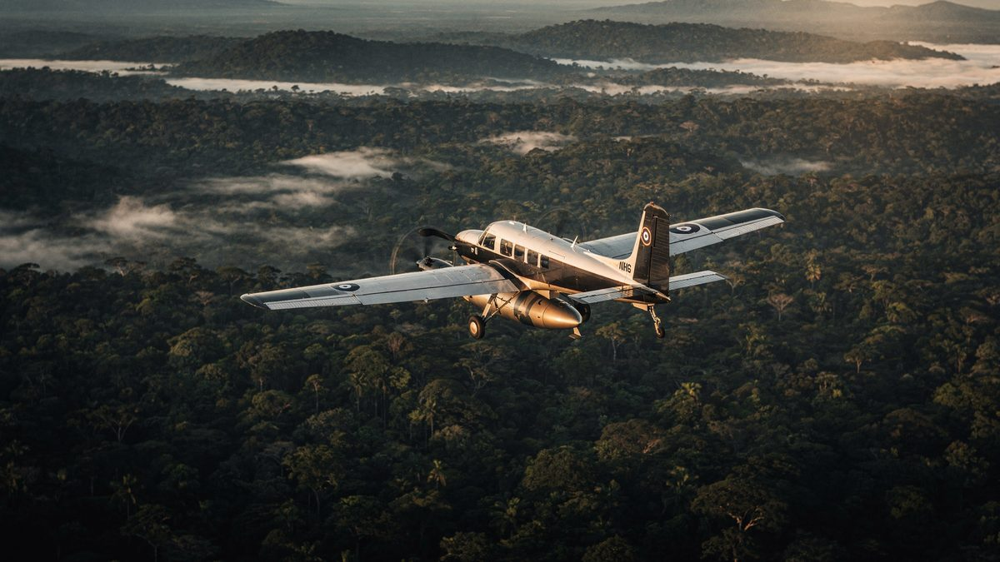
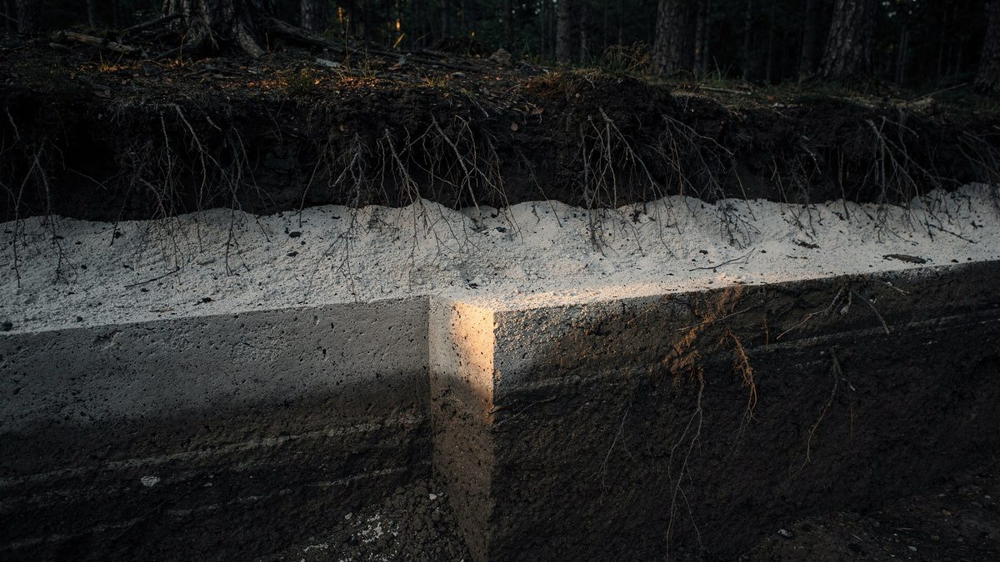
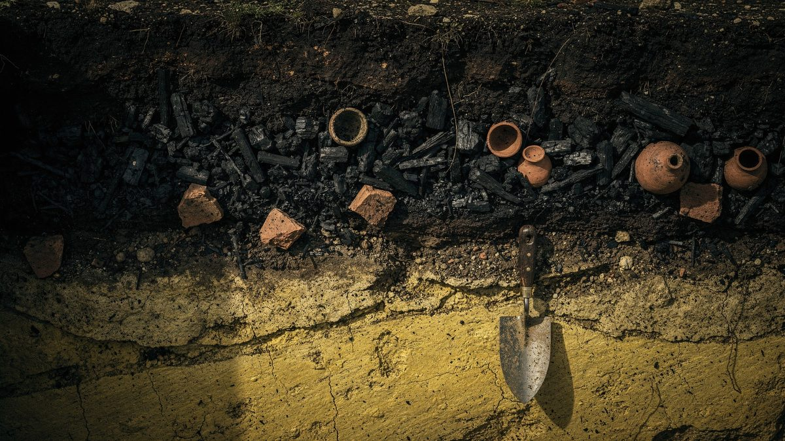
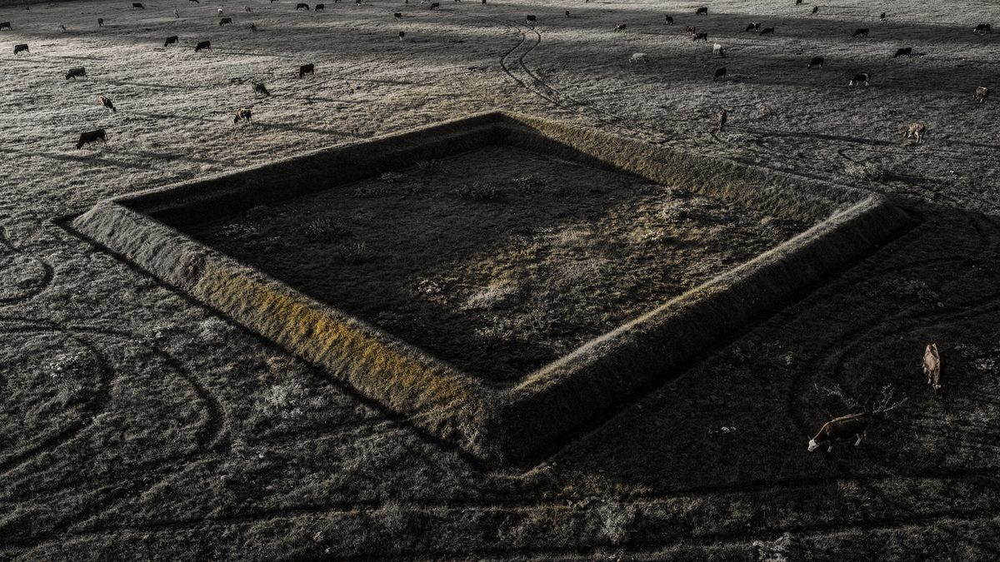

Cidades amazônicas reveladas por laser
Durante quase um século a arqueologia sustentou que a floresta não comportava cidades, e tinha uma prova que parecia definitiva: ninguém nunca havia encontrado ruína alguma. A prova tinha um defeito — ela dependia de alguém conseguir enxergar o chão.
- Onde
- Upano · Mojos · Acre · Xingu
- Período
- c. 500 a.C. – 1400 d.C.
- Técnica
- Lidar aerotransportado
- Bacia varrida
- < 1%
- Estruturas mapeadas
- + de 20 mil no sudoeste
- Status
- Levantamento em curso
Em agosto de 1542, uma tripulação faminta descia um rio que não sabia nomear. Francisco de Orellana tinha saído de Quito atrás de canela e ouro, se separara da expedição principal e agora seguia a correnteza porque voltar contra ela era impossível. O frei Gaspar de Carvajal ia a bordo, escrevendo. E o que ele descreveu naquelas páginas não foi floresta vazia. Foi margem povoada por léguas seguidas, aldeias coladas umas nas outras, caminhos entrando terra adentro, cerâmica fina, gente demais para contar.

O relato de Carvajal foi lido por quatrocentos anos como o que parecia ser: exagero de náufrago. Havia motivo para desconfiar — o mesmo texto descreve mulheres guerreiras, e foi delas que veio o nome do rio. Se o cronista inventou as amazonas, por que acreditar no resto?
Quando os europeus voltaram em número, um século depois, não havia mais nada parecido com aquilo. A varíola e o sarampo tinham chegado antes deles, subindo os rios mais rápido do que qualquer expedição. O que encontraram foram grupos pequenos e dispersos, exatamente como a teoria previa. A ausência virou prova.
01O paraíso falsificado
A tese tinha fundamento, e é importante dizer isso antes de desmontá-la. O solo da Amazônia é, em boa parte, pobre. A floresta tropical guarda quase toda a sua reserva de nutrientes na biomassa viva — nas próprias árvores — e não na terra. Derrubado um trecho e plantada a primeira roça, o chão se esgota em poucos anos. É uma limitação real, medida em campo, não um preconceito.
Em 1971, a arqueóloga norte-americana Betty Meggers deu a essa limitação um nome que pegou: counterfeit paradise, o paraíso falsificado. A exuberância da floresta enganaria o observador; por baixo dela haveria um ambiente incapaz de sustentar populações densas. E de um ambiente assim decorreria tudo o mais — grupos pequenos, móveis, sem hierarquia estável, sem monumento.
O modelo dominou a arqueologia amazônica por décadas. Ele explicava os dados disponíveis, e os dados disponíveis eram, em grande parte, a ausência de achados. O problema é que essa ausência tinha uma causa trivial que ninguém pesava: debaixo do dossel fechado, a visibilidade no solo é de poucos metros. É perfeitamente possível atravessar uma praça de terra batida e registrar no caderno que se subiu um morro.
Os europeus procuravam pedra, porque pedra era o que eles chamavam de civilização. O viés que atravessa quatro séculos de registro
02O laser que atravessa a árvore
O instrumento que mudou a conta se chama lidar, e o princípio cabe em duas frases. Uma aeronave voa baixo e dispara centenas de milhares de pulsos de laser por segundo contra o chão, registrando quanto tempo cada um leva para voltar. A copa de uma árvore não é uma parede: é uma peneira. A maioria dos pulsos bate em folha, mas uma fração escorrega pelos vãos, toca o solo e retorna.
O resto é processamento. O programa recebe milhões de retornos, descarta tudo o que voltou da vegetação e conserva apenas o último eco de cada pulso — aquele que veio do ponto mais baixo. Com isso se monta um modelo digital de terreno: a superfície do chão, sem floresta em cima.

Nada nesse método é exótico. O lidar é usado há décadas em engenharia e cartografia. O que mudou foi o custo do voo e a capacidade de processar o volume de dados — e, sobretudo, alguém ter decidido apontar o equipamento para trechos de floresta que a teoria dizia estarem vazios.
03O vale do Upano
Em 12 de janeiro de 2024, a revista Science publicou o resultado de um levantamento desses sobre o vale do rio Upano, no sopé leste dos Andes equatorianos, província de Morona-Santiago. A equipe era liderada pelo arqueólogo francês Stéphen Rostain, que já trabalhava na região havia mais de vinte anos — escavando, aliás, algumas daquelas plataformas sem conseguir enxergar o conjunto de que faziam parte.
O modelo de terreno trouxe cerca de seis mil plataformas de terra distribuídas por aproximadamente 300 km². Não são elevações naturais: são retângulos regulares, em média com 20 por 10 metros de área e dois a três metros de altura, construídos com terra transportada e socada. Sobre cada um havia uma construção de madeira e palha que o clima apagou; a plataforma ficou.
Elas não estão espalhadas ao acaso. Agrupam-se em conjuntos em torno de pátios quadrados, e os conjuntos se somam em bairros. Uma das plataformas escavadas em Kilamope mede 140 por 40 metros, dimensão que não se explica por moradia familiar. A ocupação vai de cerca de 500 a.C. ao intervalo entre 300 e 600 d.C.

As ruas que não entortam
O que mais desestabilizou a leitura anterior, porém, não foram as plataformas. Foram as vias. O levantamento revelou estradas escavadas no terreno, com margens elevadas, algumas medindo de dez a vinte metros de largura. Uma delas segue reta por cerca de 25 quilômetros.
Vale demorar nesse detalhe, porque é ele que carrega o argumento. Um caminho de caça entorta: contorna o afloramento, desvia da árvore grossa, acompanha o veio d'água. Uma via reta por 25 quilômetros não contorna nada — ela atravessa. E várias delas se cruzam em ângulo de noventa graus.
Disso decorrem três coisas, e nenhuma é pequena: alguém definiu o traçado antes de abrir o primeiro metro; alguém tinha autoridade suficiente para decidir por onde ele passaria, inclusive sobre terreno de terceiros; e alguém conseguiu reunir e sustentar mão de obra para cavar. Traçado, autoridade e trabalho coordenado são, juntos, a definição mínima de organização política.


04As pirâmides que são de terra
Dois anos antes, em maio de 2022, a Nature havia publicado um levantamento equivalente sobre os Llanos de Mojos, planície alagável do norte da Bolívia. A equipe, liderada pelo arqueólogo alemão Heiko Prümers, do Instituto Arqueológico Alemão, com Carla Jaimes Betancourt, da Universidade de Bonn, mapeou 200 km² da área ocupada pela cultura Casarabe, que floresceu entre aproximadamente 500 e 1400 d.C.
Apareceram dois assentamentos grandes, Cotoca e Landívar. Cotoca ocupa cerca de 315 hectares, com uma extensão de um quilômetro e meio no sentido norte-sul. No centro, uma plataforma escalonada de terra com uma estrutura cônica no topo: do solo ao ponto mais alto, 22 metros — um prédio de sete andares, feito de terra carregada. Em volta, cercas em anéis concêntricos; saindo dela, calçadas elevadas atravessando a planície alagada em linha reta, e canais para mover água e canoa.

Por que ninguém viu antes
A pergunta é inevitável: como algo de 22 metros fica escondido? A resposta está no material. Uma pirâmide de pedra continua sendo uma pirâmide de pedra — resiste, reflete a luz, aparece no horizonte. Uma pirâmide de terra, em clima tropical úmido, é um morro. Em poucos anos está coberta de capim; em algumas décadas tem árvore adulta em cima; em cinco séculos é paisagem.
Some-se a isso o viés do observador. Quem chegou procurando alvenaria anotou floresta ao passar por cima de urbanismo. O engano não foi de percepção, foi de categoria.
05A terra que eles fabricaram
Há um segundo rastro, e ele não é monumental — está sob os pés. Espalhados pela bacia existem trechos de solo escuro, muito mais férteis do que a terra em volta, que os ribeirinhos chamam de terra preta. Não é uma formação natural. É resíduo de ocupação humana: carvão, osso, caco de cerâmica, restos de alimento e dejeto, acumulados no mesmo lugar por séculos até constituírem um solo novo.
E aqui está o dado que desmonta o paraíso falsificado sem negar sua premissa. Esses trechos permanecem férteis até hoje, séculos depois de quem os produziu ter desaparecido. O carvão dá ao solo uma estrutura que retém nutrientes em vez de deixá-los lavar com a chuva.

Meggers não errou ao dizer que o solo amazônico era pobre. Errou ao supor que as pessoas aceitariam o solo do jeito que ele veio.
O argumento tem um complemento vivo. Levantamentos de composição florestal mostram que espécies úteis ao ser humano — castanheira, cacau, açaí, pupunha, entre outras — aparecem em concentrações que o acaso não explica, e justamente nas proximidades de sítios arqueológicos. Em certas manchas, a densidade é alta demais para ser espontânea. O que se chama de floresta intocada é, em boa parte dela, um pomar de dois mil anos que ficou sem jardineiro.
06As teorias, da mais sóbria à mais improvável
Urbanismo de baixa densidade
É a leitura que organiza praticamente toda a literatura recente. Não se trata de cidades compactas à maneira europeia ou mesoamericana: o padrão é de núcleos residenciais dispersos, com roça, pomar e floresta manejada entre eles, articulados por estradas e organizados em torno de praças e montículos. O termo não é uma concessão — descreve uma forma urbana com regras próprias, documentada também no Sudeste Asiático.
Uma cidade que se atravessa a pé em meia hora sem sair dela e sem nunca deixar de ver árvore. Não é uma cidade menor: é outra ideia do que uma cidade é.
A memória oral estava certa, e não foi tratada como fonte
No Alto Xingu, o arqueólogo norte-americano Michael Heckenberger trabalhou durante anos com os Kuikuro. Havia gerações eles descreviam aldeias antigas maiores que as atuais, ligadas por caminhos largos e organizadas em torno de praças centrais. Aquilo circulava como tradição oral — narrativa respeitável, sem valor probatório.
As escavações e o mapeamento, publicados na Science em 2003 e 2008, encontraram no chão o que vinha sendo descrito: conjuntos de aldeias, vias largas, praças. A informação nunca esteve perdida. Estava sendo transmitida esse tempo todo por gente que o método não classificava como fonte.
Quanta gente vivia ali
É o ponto mais aberto do dossiê. Para o Upano, um dos coautores estimou entre 15 e 30 mil pessoas no auge; outras leituras divulgadas na imprensa chegaram a ultrapassar 100 mil. Em julho de 2026, um estudo publicado na Nature por uma equipe liderada por Martti Pärssinen, com Risto Kalliola e Alceu Ranzi, combinou voos de lidar e imagem de satélite sobre cerca de 183 mil km² do sudoeste amazônico — Acre, Amazonas, e partes da Bolívia e do Peru — e catalogou algo entre 24 e 30 mil estruturas de terra, propondo para a região o nome de civilização Aquiry e uma população de 1,25 a 3 milhões de pessoas entre 100 e 300 d.C.
O número é impressionante e merece o cuidado que qualquer número assim merece: ele vem de um modelo de densidade aplicado a estruturas mapeadas, não de uma contagem. Estimativas populacionais na arqueologia dependem de quantas pessoas se supõe por unidade habitacional e de quanto tempo se supõe que as unidades foram ocupadas ao mesmo tempo — duas suposições que mudam o resultado em ordens de grandeza. O que as estruturas sustentam com firmeza é a existência e a extensão; a aritmética populacional continua em discussão.
O paraíso falsificado
A tese de Meggers está hoje minoritária, mas descartá-la inteiramente seria injusto e impreciso. A observação de base — que o solo amazônico é pobre e a fertilidade está na biomassa — permanece correta. O que caiu foi a inferência: a de que uma limitação ambiental determina o teto de complexidade social de quem vive nela. A terra preta é a contraprova material.
Eldorado, Atlântida amazônica, civilização perdida avançada
A tentação de ler esses achados como confirmação das cidades douradas que os cronistas coloniais procuravam é compreensível e está errada. Não há ouro, não há alvenaria, não há escrita, não há metalurgia de ferramenta. O que existe é terra movida em escala industrial, cerâmica, estradas planejadas e manejo florestal — coisas que os povos de lá fizeram com as técnicas que tinham, e que bastam.
A versão mística é menos interessante do que o fato, e faz um estrago específico: transfere para uma civilização imaginária e desaparecida o crédito que pertence aos ancestrais de povos que continuam vivos e continuam disputando a posse daquele território.
07Cronologia
- c. 500 a.C.Começa a ocupação registrada no vale do Upano, com as primeiras plataformas de terra.
- c. 100 – 300 d.C.Período ao qual o estudo de 2026 atribui o auge populacional do sudoeste amazônico.
- c. 300 – 600 d.C.Abandono do vale do Upano, associado à atividade do vulcão Sangay.
- c. 500 – 1400 d.C.Florescimento da cultura Casarabe nos Llanos de Mojos, com Cotoca e Landívar.
- 1542A expedição de Francisco de Orellana desce o rio. Frei Gaspar de Carvajal descreve margens densamente povoadas.
- séculos XVI – XVIIEpidemias europeias sobem os rios à frente dos europeus. Quando as expedições seguintes chegam, a paisagem humana já é outra.
- 1971Betty Meggers publica Amazonia: Man and Culture in a Counterfeit Paradise. O modelo do paraíso falsificado se torna dominante.
- 2003 e 2008Michael Heckenberger publica na Science o mapeamento do Alto Xingu, confirmando no solo o que a tradição kuikuro descrevia.
- maio de 2022Prümers e equipe publicam na Nature o lidar dos Llanos de Mojos: Cotoca, Landívar e a plataforma de 22 metros.
- outubro de 2023Vinicius Peripato e colaboradores publicam na Science a modelagem que projeta mais de dez mil estruturas de terra ainda não localizadas.
- janeiro de 2024Rostain e equipe publicam na Science o vale do Upano: seis mil plataformas, 300 km² e a via reta de 25 quilômetros.
- julho de 2026Pärssinen, Kalliola, Ranzi e equipe publicam na Nature o levantamento do sudoeste amazônico, com mais de vinte mil estruturas catalogadas.
08O que continua em aberto
Tudo o que está neste dossiê veio de uma fração mínima da área possível. A bacia amazônica tem mais de seis milhões de quilômetros quadrados. A superfície varrida por lidar até hoje, somando todos os levantamentos publicados, não chega a um por cento dela — o estudo de 2026, o maior até agora, cobriu cerca de 4.500 km² de voo sobre uma área de interesse de 183 mil.
A formulação honesta, portanto, não é que se descobriram as cidades da Amazônia. É que se descobriram as que estavam sob os primeiros trechos em que alguém apontou o laser. E em quase todo trecho onde apontaram, encontraram alguma coisa.

Em outubro de 2023, uma equipe liderada por Vinicius Peripato tentou estimar o tamanho do que falta. Combinando os levantamentos existentes com variáveis ambientais — temperatura, precipitação, tipo de solo, distância até a água —, o modelo projetou algo entre dez e vinte e quatro mil estruturas de terra ainda não localizadas, com valor central em torno de dezesseis mil. É uma projeção estatística, com a incerteza que o próprio intervalo declara. Mas o piso do intervalo já é maior do que tudo o que foi catalogado em um século de trabalho de campo.

Três perguntas permanecem abertas, e nenhuma por falta de tecnologia. Quantos eram — a aritmética populacional depende de suposições que mudam o resultado em ordens de grandeza. Como se governavam — traçado planejado e obra coletiva indicam autoridade, mas não dizem se era hereditária, rotativa, religiosa ou negociada, e não há escrita para consultar. Por que terminaram — no Upano o vulcão oferece uma explicação local; em Mojos e no sudoeste, o colapso é anterior ao contato europeu em boa parte dos sítios, e a causa continua sem resposta.
O que mudou definitivamente foi o ponto de partida. A pergunta deixou de ser se havia cidades na Amazônia e passou a ser quantas ainda estão sob os noventa e nove por cento que ninguém mapeou.
09Fontes consultadas
Este dossiê é texto autoral. As fontes abaixo foram consultadas para apuração de datas, medidas e atribuições; nenhuma foi reproduzida.
- Rostain, S. et al. — Two thousand years of garden urbanism in the Upper Amazon. Science, 12 de janeiro de 2024.
- Prümers, H.; Jaimes Betancourt, C.; Iriarte, J.; Robinson, M.; Schaich, M. — Lidar reveals pre-Hispanic low-density urbanism in the Bolivian Amazon. Nature, maio de 2022.
- Peripato, V. et al. — More than 10,000 pre-Columbian earthworks are still hidden throughout Amazonia. Science, outubro de 2023.
- Pärssinen, M.; Kalliola, R.; Ranzi, A. et al. — levantamento do sudoeste amazônico. Nature, julho de 2026.
- Heckenberger, M. et al. — trabalhos sobre o Alto Xingu publicados na Science em 2003 e 2008.
- Meggers, B. — Amazonia: Man and Culture in a Counterfeit Paradise, 1971. É a tese que este dossiê contradiz.
- Material de divulgação institucional da Universidade de Bonn e da Universidade de Utrecht sobre os dois levantamentos, e a ficha enciclopédica consolidada dos sítios do vale do Upano.